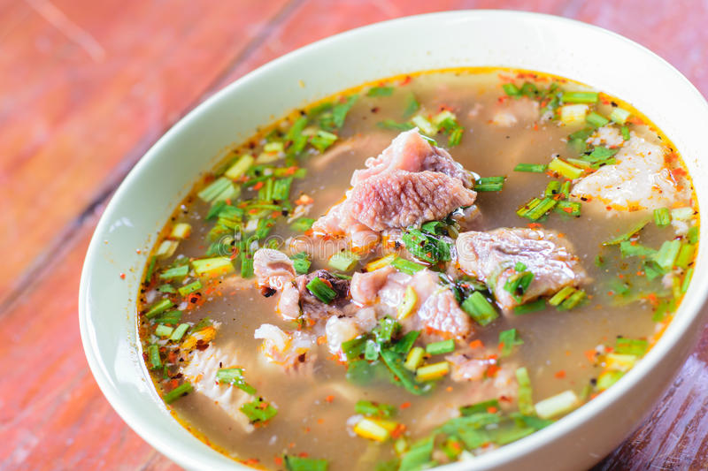
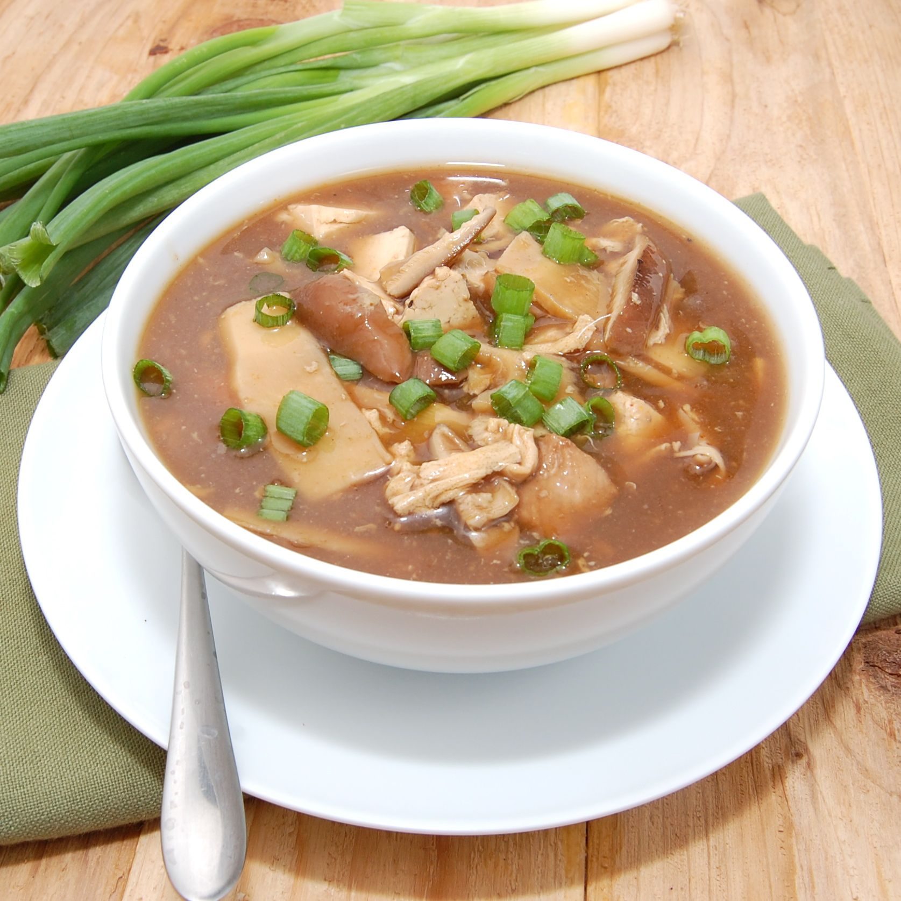
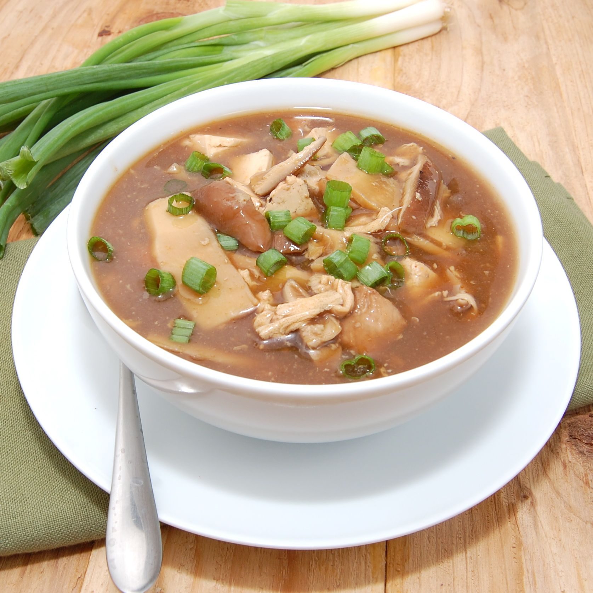
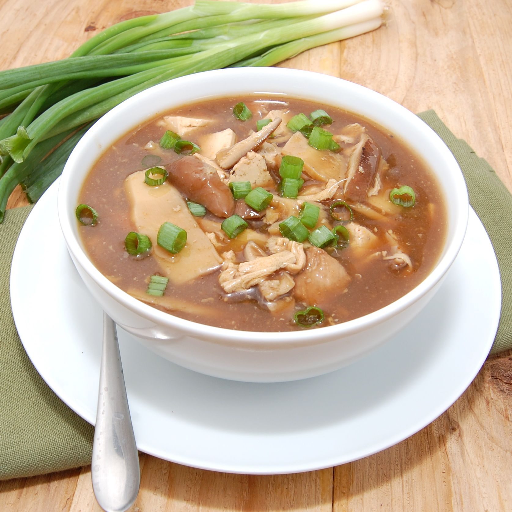
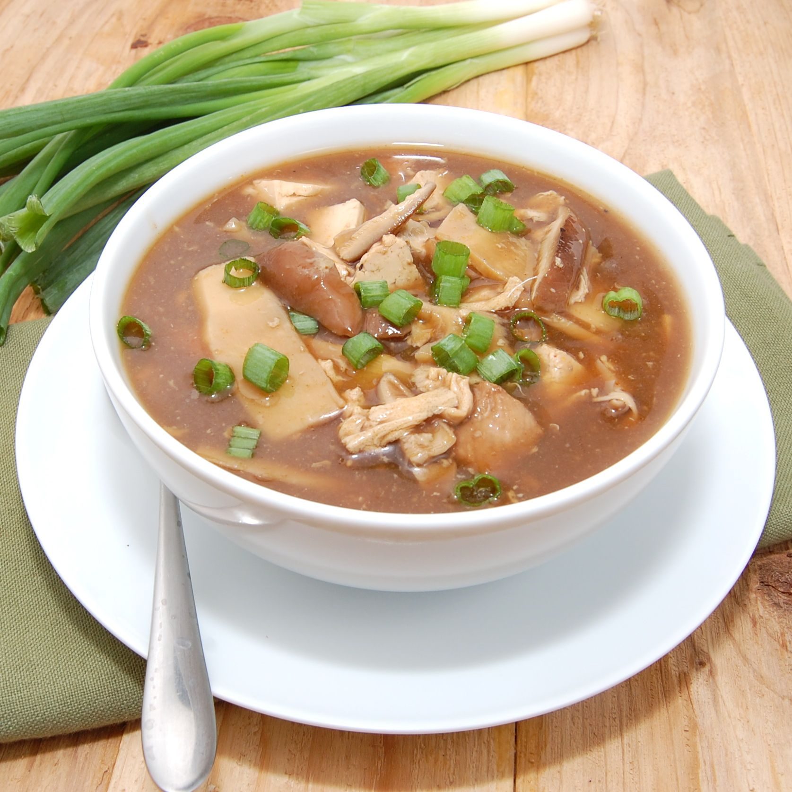

 


Craving for a mouth-watering bowl of homemade soup? Here’s a recipe for a flavourful and comforting one.

| 1 cube MAGGI® Chicken Stock Cube | 1 Yellow Onion |
| 50 g Sweet Potato | 200 g Lean Beef |
| 5 pcs Dried Tamarind | 1 Tomato |
| 50 g Baby Corn | 1 Red Chili |
| 50 g White Radish | 50g Long Bean |
| 50g Green Beans | 50g Mustard Leaves |
| MAGGI® Chicken Stock Cube | |
In a pot, add in the MAGGI® Chicken Stock Cube, yellow onion, sweet potatoes, meat and tamarind skins and boil everything for 15 minutes.
Once the meat is tender, add in the tomato, baby corn, red chilli, white radish, long beans, green beans and mustard leaves. Let it simmer for 5 minutes.
When the soup is ready, serve it up to your loved ones with rice or some crusty bread. It’s sure to warm their stomachs and definitely their hearts.
| Energy | 228.02 kcal |
| Protein | 18.22 |
| Carbohydrates | 31.26 g |
| Fats | 3.69 g |